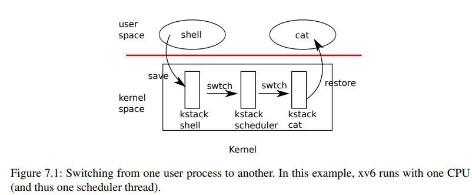

[xv6]:调度
1. xv中的线程与进程
分时复用
xv6中采用的也是分时复用，即每个进程在CPU上运行一段时间，计时器超时过后引发
trap, 然后再由调度器调度其它进程在CPU上运行，使得每个进程以为自己独占CPU内核线程与调度线程
在xv6中，每个进程只有一个线程，该线程运行在内核当中，被称为内核线程, 这样做主要是为了简单，Linux这种复杂系统中，除了内核线程之外还拥有用户线程.
在每个CPU当中，还运行着一个调度线程，该线程负责不同内核线程之间的调度，当一个内核线程
t1发生定时器中断时，就会自愿放弃CPU, 此时内核线程会首先切换为调度线程，然后调度线程再找出合适的其它内核线程t2，然后将CPU让给该内核线程在xv6中，对于CPU来说，在任意时刻只能有一个线程正在运行，该线程只能是以下线程中的一个:
- 内核线程
- 调度线程
xv中的上下文(context)
所谓的上下文其实就是一系列寄存器, xv中的
context结构体如下1
2
3
4
5
6
7
8
9
10
11
12
13
14
15
16
17
18struct context {
uint64 ra; // 返回地址寄存器, 通过该寄存器，swtch会返回到不同线程当中
uint64 sp; // stack pointer
// callee-saved // 被调用者保存寄存器
uint64 s0;
uint64 s1;
uint64 s2;
uint64 s3;
uint64 s4;
uint64 s5;
uint64 s6;
uint64 s7;
uint64 s8;
uint64 s9;
uint64 s10;
uint64 s11;
};所谓的上下文切换其实就是保存旧进程的寄存器值，加载新进程的寄存器的值, 这些值都会被保存在进程的
trapframe中xv6中并没有使用一种特定的结构体来表示，而是使用了
proc结构体中的context字段来表示该进程对应的内核线程, 因此在xv6中中，进程与线程的区别不是太大
2. 调度实现
线程调度示意图

下面是对xv6中进程/线程调度流程的简要分析:
进程
p1的时间分片结束，计时器产生中断，陷入traptrap handler发现为计时器中断，调用yield()计时器中断处理程序yield()将进程的状态由RUNNING改为RUNABLE，表示其在调度完毕之后可以被重新调度紧接着调用
sched()sched()会对原进程的状态进行检查，然后跳转到swtch.S进行真正的上下文切换，切换到CPU的调度线程scheduler当跳转到
scheduler中时，并不是直接跳转到函数首部，而是跳转到scheduler中的swtch调用后面的一条指令接下来，在
scheduler中会在全局进程表中挑选出可调度(RUNABLE)的新进程，再次调用swtch,切换到新进程此时，会再次跳转到
sched()中的swtch.S, 不过此时在CPU上运行的已经是新进程了
在上面的例子中， swtch调用就像是一个传送门，从旧线程的swtch(p1)会跳转到scheduler的swtch(p2), 然后再从scheduler中的第二次swtch(p3)中跳转到(p1), 不过此时已经是新进程了
下面进行具体代码分析:
kernel/trap.c
1
2
3
4// give up the CPU if this is a timer interrupt.
// 计时器中断
if(which_dev == 2)
yield();trap处理程序发现为计时器中断, 调用yield()kernel/proc.c
1
2
3
4
5
6
7
8
9
10
11
12
13
14
15
16
17
18
19
20
21
22// Give up the CPU for one scheduling round.
void
yield(void)
{
// 让出CPU
struct proc *p = myproc();
acquire(&p->lock);
// 该lock将会一直持有，直到sched()返回一个新进程
// 这里lock的作用有三个:
// 1.保护p->state为RNNNABLE
// 2.保护trapframe中的寄存器不被更改
// 3.停止使用当前进程的内核栈，防止两个CPU使用同一个内核栈
// 总结： 1. 防止其它CPU的调度器调度这个进程，因为该进程正处于调度当中
// 2. acquire会关中断，防止swtch过程被中断导致寄存器保存不完整
// 将进程的状态改为RUNNABLE, 表示其可被调度
p->state = RUNNABLE;
//************************************旧进程******************************//
sched();
//************************************新进程*****************************//
// 运行到此时为新进程了，接下来释放原进程的lock
release(&p->lock);
}yield()的作用包括:- 获取旧进程的锁
- 将旧进程的状态改为
RUNNABLE - 调用
sched(), 变为新进程 - 释放掉原进程的锁
kernel/proc.c
1
2
3
4
5
6
7
8
9
10
11
12
13
14
15
16
17
18
19
20
21
22
23
24
25
26
27
28
29
30
31
32
33
34
35void
sched(void)
{
// 进程调度
int intena;
struct proc *p = myproc();
// 检查是否持有锁, 持有其它锁时无法放弃CPU
if(!holding(&p->lock))
panic("sched p->lock");
// 检测中断嵌套的层数，因为acquire会关闭中断，且中断可以叠加
// 其实本质上是在看旧线程acquire()获得锁的个数，这里一定得是1个
// 主要是为了预防死锁发生，因为如果旧线程还有其它锁m, 那么当调度到
// 新线程时，新线程可能也会尝试获取锁m, 此时就有可能会导致死锁发生
if(mycpu()->noff != 1)
panic("sched locks");
// 检查运行状态
if(p->state == RUNNING)
panic("sched running");
// 检查中断状态
if(intr_get())
panic("sched interruptible");
intena = mycpu()->intena; // 在push_off之前是否interrupt enable
// 开始进行调度，准备切换上下文/线程
// 注意这里使用的新上下文是mycpu()->context, 即CPU的swtch调度线程
//*****************旧线程********************************//
swtch(&p->context, &mycpu()->context);
//*****************新线程*******************************//
// 当执行到这时，已经切换到新内核线程了, 接下来会返回yield
mycpu()->intena = intena;
}sched()中所做的工作包括:- 检查当前CPU的持有进程(旧进程)的各种状态:
- 是否持有旧进程的锁
- 是否仅持有一个锁
- 是否关闭了中断
- 调用
swtch汇编代码，切换到调度线程
- 检查当前CPU的持有进程(旧进程)的各种状态:
switch.S1
2
3
4
5
6
7
8
9
10
11
12
13
14
15
16
17
18
19
20
21
22
23
24
25
26
27
28
29
30
31
32
33
34
35
36
37
38# 上下文的切换
# 保存旧线程的寄存器，然后加载新线程的寄存器
# 这里的寄存器与proc.h中的context.h
.globl swtch
swtch:
sd ra, 0(a0)
sd sp, 8(a0)
sd s0, 16(a0)
sd s1, 24(a0)
sd s2, 32(a0)
sd s3, 40(a0)
sd s4, 48(a0)
sd s5, 56(a0)
sd s6, 64(a0)
sd s7, 72(a0)
sd s8, 80(a0)
sd s9, 88(a0)
sd s10, 96(a0)
sd s11, 104(a0)
ld ra, 0(a1) // 关键点, ra为 return address返回地址寄存器
ld sp, 8(a1)
ld s0, 16(a1)
ld s1, 24(a1)
ld s2, 32(a1)
ld s3, 40(a1)
ld s4, 48(a1)
ld s5, 56(a1)
ld s6, 64(a1)
ld s7, 72(a1)
ld s8, 80(a1)
ld s9, 88(a1)
ld s10, 96(a1)
ld s11, 104(a1)
ret该段代码的工作包括:
- 保存被调用者保存寄存器，因为这些寄存器在调度线程/新进程中可能会被修改
- 切换上下文，即加载调度线程的寄存器，关键点在于
ra寄存器，这是接下来要返回的地址
执行完毕之后，原线程切换为调度线程，
ra的值通常是scheduler中的swtch调用的下一条地址kernel/proc.c
1
2
3
4
5
6
7
8
9
10
11
12
13
14
15
16
17
18
19
20
21
22
23
24
25
26
27
28
29
30
31
32
33
34
35
36
37
38
39
40
41
42
43
44
45
46
47
48
49// 每个CPU都有的进程调度器
// scheduler永远不会返回, 它的操作包括:
// 1. 选择一个进程
// 2. 切换到该进程
// 3. 新进程运行完毕之后最终通过swtch归还控制权
void
scheduler(void)
{
struct proc *p;
struct cpu *c = mycpu();
// c->proc为正在该cpu上运行的进程
c->proc = 0;
for(;;){
// Avoid deadlock by ensuring that devices can interrupt.
// 开中断以避免死锁
intr_on();
int nproc = 0;
for(p = proc; p < &proc[NPROC]; p++) {
// 新进程的锁
acquire(&p->lock);
// ??
if(p->state != UNUSED) {
nproc++;
}
// RUNNABLE表示进程可以被调度
if(p->state == RUNNABLE) {
// Switch to chosen process. It is the process's job
// to release its lock and then reacquire it
// before jumping back to us.
p->state = RUNNING;
c->proc = p;
// 从CPU的调度线程切换到挑选出的新进程的内核线程
// 由于ra返回地址寄存器改变了，因此接下来应该会跳转到sched()函数的swtch行
swtch(&c->context, &p->context);
// Process is done running for now.
// It should have changed its p->state before coming back.
c->proc = 0;
}
release(&p->lock);
}
if(nproc <= 2) { // only init and sh exist
intr_on();
asm volatile("wfi");
}
}
}紧接着上面，程序应该会跳转到40行，然后在经过一个循环之后
从全局进程表中找出可以被调度的进程作为新进程
设置新进程的状态为
RUNNING，cpu->proc调用
swtch, 由调度线程切换为新线程，接下来会从上一次的swtch调用点返回, 即sched()在
sched()中释放完旧线程的锁之后，整个调度过程结束
例外:
ra并不总是指向
scheduler，当一个进程刚被创建时，它的ra在allocproc中被设置为forkret，因此scheduler在调度执行一个新创建的进程时，会返回到forkret中，然后就从usertrapret直接返回到用户空间中
2
3
4
5
6
7
8
9
10
11
12
13
14
15
16
17
18
19
20
21
22
23
24
25
26static struct proc*
allocproc(void)
{
// ...
// Set up new context to start executing at forkret,
// which returns to user space.
memset(&p->context, 0, sizeof(p->context));
p->context.ra = (uint64)forkret;
// ...
}
// A fork child's very first scheduling by scheduler()
// will swtch to forkret.
void
forkret(void)
{
// ...
// Still holding p->lock from scheduler.
release(&myproc()->lock);
// ...
usertrapret();
}
调度过程中的lock
一是为什么从调用yield开始，持有p->lock直到在scheduler中释放；或者是从scheduler开始，持有p->lock直到在yield的出口处释放。
以从yield到scheduler为例，p->lock保护三件事情：
- 改变进程状态为RUNNABLE，防止进程状态的不一致。
- swtch发生的上下文切换，防止保存和恢复寄存器不完整。
- 停止使用当前内核线程的内核栈，因此防止两个CPU使用同一个内核栈
因此，p->lock的一个作用就是，在整个调度过程完成之前，不能让其它的调度器调度执行旧的进程，因为它处于一种不稳定的中间态：我们在yield中标记了该进程为RUNNABLE，但是实际上我们还在执行该进程的内核线程，若此时其它CPU发现了它，并且调度执行它，那么就会有两个CPU在执行该进程，这是一个严重的错误
因此，通过一直持有p->lock直到返回scheduler中，我们可以避免以上情况发生，因为就算其它CPU上的调度器发现该进程，即将调度执行它时，也会阻塞在acquire(p->lock)上。从scheduler回到sched或者用户空间中也是类似的，要持有p->lock直到新的内核线程已经在运行，则可以在yield中释放该锁。
- 中断相关
此外，通过acquire(p->lock)，中断也被关闭，因此保证了调度过程的原子性。对于在swtch中发生的上下文切换，在中断关闭的情况下可以放心地完成整个wtch的过程。否则，中断发生时进程会呈现出一种奇怪的运行状态，例如状态虽然为RUNNING，但是相关的寄存器还没有加载完全，然后时钟中断导致swtch时，将没有完成初始化的寄存器存进了context中，从而覆盖了该进程真正的寄存器值，这也是一个严重的错误。
总的来说，p->lock保证了取消调度和调度这两个过程的原子执行：
- 如果进程状态是
RUNNING，那么时钟中断导致的yield可以安全地，从这个进程的内核线程，切换到调度线程的调度器中。在这个过程中，CPU寄存器要保持着该进程的寄存器值，c->proc要保持指向该进程。 - 如果进程状态是
RUNNABLE，那么调度器可以安全地，调度执行这个进程。在这个过程中，p->context要保持着该进程的寄存器值，没有CPU使用该进程的内核栈，而且没有CPU的c->proc指向该进程。
二是为什么在sched中检查，在调用swtch前，除了持有p->lock以外，不能持有其它锁
这个问题的原因是可能会导致死锁
如果在单CPU上，一个内核线程持有了除p->lock以外的其它锁m，然后swtch到调度器，调度器再swtch执行一个新的内核线程，假如新的内核线程也要获取锁m的话，那么死锁就发生了
本博客所有文章除特别声明外，均采用 CC BY-SA 4.0 协议 ，转载请注明出处！